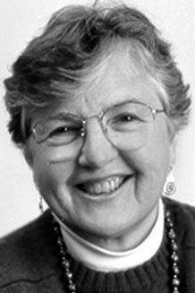

|  |
2006 год Frances Elizabeth Allen (1932) «За новаторский вклад в теорию и практику оптимизации техник компиляторов, послуживший основой для современных оптимизирующих компиляторов и автоматическому распараллеливанию программ» |
Страна: США
Образование: Магистр науки в области математики, Мичиганский университет, 1957
О лауреате
Allen провела большую часть своей карьеры разрабатывая передовые компиляторы языков программирования для IBM Research Center. Её первым крупным проектом был компьютер IBM 7950 Harvest. Harvest был сопроцессором для Stretch (один из первых суперкомпьютеров), который был разработан по заказу Агентства национальной безопасности США для обработки секретных сообщений. Allen и её команда разработали простой компилятор для обработки трёх разный языков программирования: FORTRAN, Autocoder и Alpha. Компиляторы трех языков разделяли общую оптимизирующую программно-аппаратную часть, которая могла бы генерировать код как для суперкомпьютера Stretch, так и для сопроцессора Harvest. Это было необычайно амбициозным проектом для того времени. Последним её крупным проектом для IBM был Parallel Translator (PTRAN) – система, для компиляции программ, написанных на FORTRAN без использования параллелизма, на компьютерных архитектурах, поддерживающих параллельные вычисления. Allen применила свой обширный опыт анализа межпроцессорного потока для создания новых алгоритмов для извлечения параллелизма из последовательного кода. PTRAN представил концепцию графа зависимостей программы, отображение, ныне используемое многими распараллеливающими компиляторами.
Ключевые слова: High-performance computing, Parallel computing, Compiler organization, Optimization
Краткая библиография
| 1. |
Allen, Frances E. and John Cocke. “A catalogue of optimizing transformations,” in Randall Rustin (ed.), Design and Optimization of Compilers (Prentice-Hall, 1972), 1—30. Возможно, первая статья, систематизирующая преобразования кода, используемые оптимизирующим компилятором для повышения его производительности. |
| 2. |
Allen, Frances E., “Interprocedural data flow analysis,” Proceedings of Information Processing 74, IFIP, Elsevier / North-Holland (1974), pp. 398-402. Ранняя статья, описывающая алгоритм компилятора для отслеживания потока данных между несколькими процедурами. В этой работе предполагается, что процедуры не являются рекурсивными и пока не используют представление интервалов графа. |
| 3. |
Allen, Frances E. and J. Cocke, “A program data flow analysis procedure,” Communications of the ACM, Vol. 19, Num. 3 (March 1976), pp. 137-147. Эта статья описывает метод анализа потока данных «определение-использование», который, в частности, эффективен на графах управления потоками. |